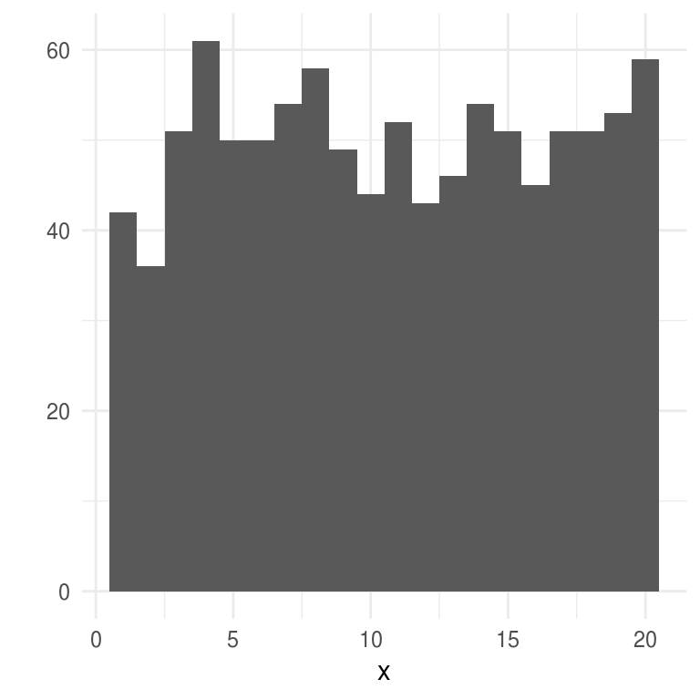
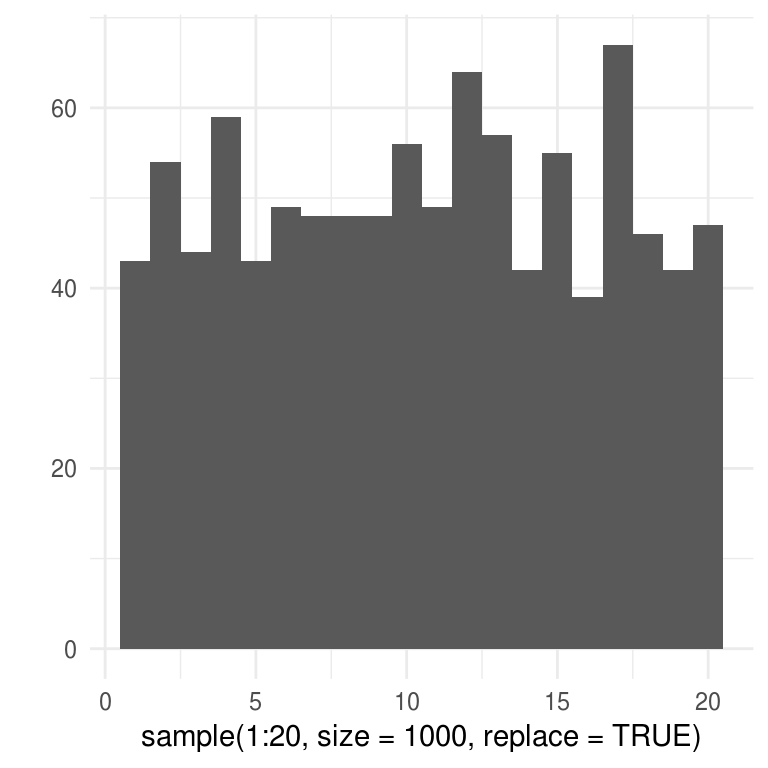
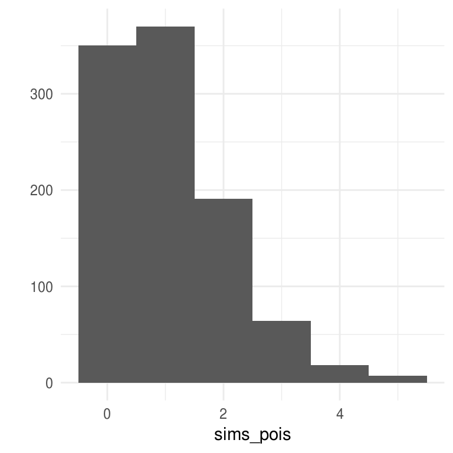
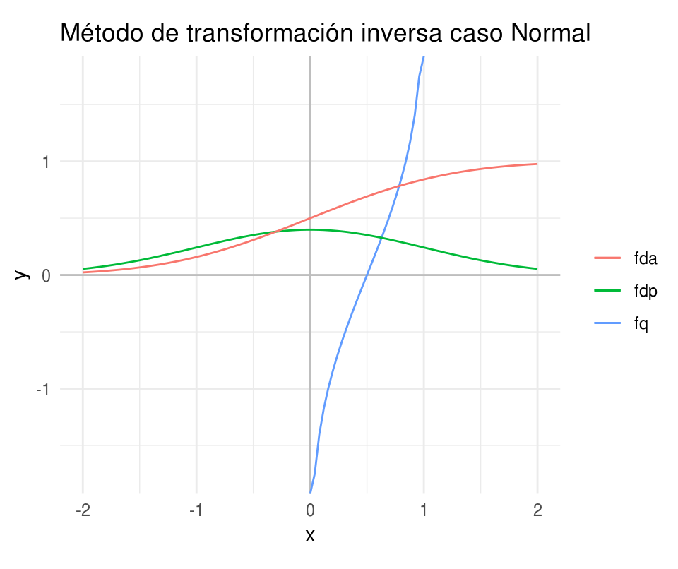
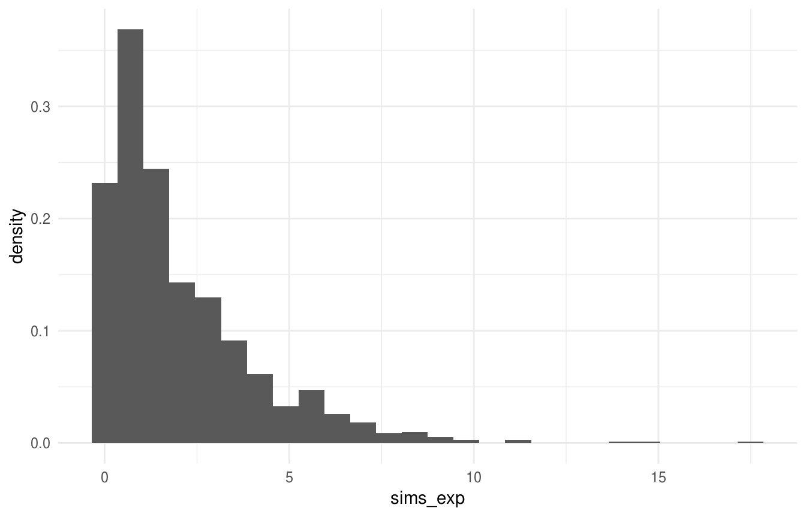

7.3 Simulación de variables aleatorias
Veremos métodos generales para simular muestras de distribuciones univariadas, generales se refiere a que se pueden utilizar independientemente de la forma de la función de densidad.
Para utilizar estos métodos debemos tener un generador de números aleatorios confiable, pues la mayoría de los métodos consisten en una transformación de números aleatorios.
Variables aletaorias discretas
Método de Inversión
Supongamos que deseamos generar el valor de una variable aleatoria discreta \(X\) con función de probabilidad: \[P(X=x_j) = p_j\] con \(j=0,1,2,..\).
Para lograr esto generamos un número aleatorio \(U\), esto es \(U\sim Uniforme(0,1)\) y definimos
\[ X = \left\{ \begin{array}{lr} x_0 & U < p_0\\ x_1 & p_0 \leq U < p_0 + p_1\\ \vdots &\\ x_j & \sum_{i=0}^{j-1}p_i \leq U < \sum_{i=0}^j p_i \\ \vdots & \\ \end{array} \right. \]
Como para \(0<a<b<1\) tenemos que \(P(a\leq U < b)=b-a\), tenemos que \[P(X=x_j)=P\bigg\{\sum_{i=0}^{j-1}p_i \leq U < \sum_{i=0}^{j}p_i \bigg \}=p_j\] y por tanto \(X\) tiene la distribución deseada.
Método de inversión
Genera un número aleatorio \(U\), tal que \(U \in (0,1)\).
Si \(U<p_0\) define \(X=x_0\) y para.
Si \(U< p_0+p_1\) define \(X = x_1\) y para.
Si \(U < p_0 + p_1 + p_2\) define \(X=x_2\) y para.
\(\vdots\)Si las \(x_i\), están ordenadas de tal manera que \(x_0<x_1<x_2<\cdots\) y si denotamos por \(P\) la función de distribución acumulada de \(X\), entonces \(P(x_k)=\sum_{i=0}^kp_i\) y por tanto, \(X\) será igual a \(x_j\) si \[P(x_{j-1}) \leq U \leq P(x_j)\]
En otras palabras, tras generar un número aleatorio \(U\) determinamos el valor de \(X\) encontrando el intervalo \([P(x_{j-1}),P(x_j))\) en el que cae \(U\), esto es equivalente a encontrar la inversa de \(P(U)\).
El tiempo que uno tarda en generar una variable aleatoria discreta usando el método de arriba es proporcional al número de intervalos que uno debe buscar, es por esto que en ocasiones vale la pena considerar los posibles valores \(x_j\) en orden decreciente de \(p_j\).
 Utiliza la función runif de R y el método de
inversión para generar 1000 simulaciones de una variable aleatoria \(X\) tal que
\(p_1=0.20, p_2= 0.15, p_3=0.25, p_4=0.40\) donde \(p_j=P(X=j)\).
Utiliza la función runif de R y el método de
inversión para generar 1000 simulaciones de una variable aleatoria \(X\) tal que
\(p_1=0.20, p_2= 0.15, p_3=0.25, p_4=0.40\) donde \(p_j=P(X=j)\).
Ejemplos
Uniforme discreta. Supongamos que deseamos simular de una variable aleatoria uniforme discreta que toma valores \(1,...,k\), usando los resultados anteriores tenemos que:
\(X=j\) si \(\frac{j-1}{n} \leq U < \frac{j}{n}\)
Entonces \(X=[kU] + 1\), donde \([x]\) representa la parte entera de x.
# uniforme discreta: donde n es el número de simulaciones y k el número de elementos
runifD <- function(n = 1, k) floor(k * runif(n)) + 1
# veamos un histograma de 1000 simulaciones de una distribución Uniforme
# discreta con parámetro k = 20
x <- runifD(n = 1000, k = 20)
qplot(x, binwidth = 1)
También podmeos usar la función sample de R:
qplot(sample(1:20, size = 1000, replace= TRUE), binwidth = 1)
Poisson: la clave para usar el método de la transformación inversa en este ejemplo es notar que: \[p_{i+1}=\frac{\lambda}{i+1}p_i\]
donde \(p_i=P(X=i) = e^{-\lambda} \cdot \lambda^i/i!\), con \(i=0,1,...\). Ahora, la cantidad \(i\) se refiere al valor que estamos considerando, \(p=p_i\) es la probabilidad de \(X = i\) y \(P=P(i)\) es la probabilidad de \(X\leq i\). Entonces, para generar una observación sequimos los siguientes pasos:
- Generar un número aleatorio \(U\), tal que \(U \in (0,1)\).
- Inicializar: \(i=0\), \(p=e^{-\lambda}\), \(F=p\).
- Si \(U<F\), definir \(X=i\) y parar.
- \(p=\lambda p/(i+1)\), \(F=F+p\), \(i=i+1\).
- Volver a 3.
# Poisson usando Inversión
rpoisI <- function(lambda = 1){
U <- runif(1)
i <- 0
p <- exp(-lambda)
P <- p
while(U >= P){
p <- lambda * p / (i + 1)
P <- P + p
i <- i + 1
}
i
}
sims_pois <- rerun(2000, rpoisI()) %>% flatten_dbl()
qplot(sims_pois, binwidth = 1)
El algoritmo que propusimos verifica de manera sucesiva si el valor es 0, 1, etc. por lo que el número de comparaciones necesarias será uno más que el valor de la variable. Ahora, el valor esperado de una variable aleatoria Poisson es \(\lambda\) por lo que en promedio se harían \(1+\lambda\) busquedas. Cuando \(\lambda\) es grande se puede mejorar el algoritmo buscando primero en valores cercanos a \(\lambda\).
 Escribe una función en R que genere simulaciones
de una variable aleatoria Poisson de la siguiente manera: define \(I=[\lambda]\),
y usa que \(p_{i+1}=\lambda p_i /(i+1)\) para determinar \(F\) de manera recursiva.
Genera un número aleatorio \(U\), determina si \(X \leq I\) comparando si
\(U \leq F(I)\). Si \(X \leq I\) busca hacia abajo comenzando en \(I\), de lo contrario
busca hacia arriba comenzando por \(I+1\). Compara el tiempo que tardan los dos
algoritmos en 5000 simulaciones de una variable aleatoria Poisson con
parámetro \(\lambda=10, 200, 500\).
Escribe una función en R que genere simulaciones
de una variable aleatoria Poisson de la siguiente manera: define \(I=[\lambda]\),
y usa que \(p_{i+1}=\lambda p_i /(i+1)\) para determinar \(F\) de manera recursiva.
Genera un número aleatorio \(U\), determina si \(X \leq I\) comparando si
\(U \leq F(I)\). Si \(X \leq I\) busca hacia abajo comenzando en \(I\), de lo contrario
busca hacia arriba comenzando por \(I+1\). Compara el tiempo que tardan los dos
algoritmos en 5000 simulaciones de una variable aleatoria Poisson con
parámetro \(\lambda=10, 200, 500\).
Aceptación y rechazo
Supongamos que tenemos un método eficiente para generar simulaciones de una variable aleatoria con función de probabilidad masa \(\{q_j, j\geq 0\}\), podemos usarla como la base para simular de una distribución que tiene función de probabilidad masa \(\{p_j, j \geq 0\}\), para hacer esto comenzamos simulando una variable aleatoria \(Y\) con función \(\{q_j\}\) y después aceptamos o rechazamos el valor simulado con una probabilidad proporcional a \(p_Y/q_Y\). En particular, sea \(c\) una constante tal que \[\frac{p_j}{q_j}\leq c\] para toda \(j\) con \(p_j > 0\). Entonces el método de aceptación y rechazo para simular una variable aleatoria \(X\) con función masa de probabilidad \(p_j=P(x=j)\) es como sigue:
Método de aceptación y rechazo
- Simula el valor de \(Y\), con función de probabilidad masa \(q_j\).
- Genera un número aleatorio \(U\), tal que \(U \in (0,1)\).
- Si \(U < p_y/(cq_y)\) definimos \(X=Y\) y paramos, en otro caso regresamos a 1.
. Supongamos que queremos simular el valor de una variable aleatoria \(X\)
que toma uno de los valores \(1, 2,3,4\) con probabilidades \(p_1=0.20, p_2= 0.15, p_3=0.25, p_4=0.40\) donde \(p_j=P(X=j)\). Usemos el método de aceptación y rechazo
con \(q\) la densidad uniforme en \(1,...,10\). Implementa una función usando el
método de aceptación y rechazo. ¿Cómo se compara en velocidad con la función
que implementaste usando el método de la transformación inversa?
En promedio este algoritmo requiere \(1/c\) iteraciones para obtener un valor generado para \(X\).
7.3.1 Variables aleatorias continuas
Método de inversión
Sea \(U\) una variable aleatoria con ditribución \(U(0,1)\). Para cualquier función de distribución \(F_X\) (\(F_X\) es creciente y continua entonces existe \(F_X^{-1}\)) la variable aleatoria \(X\) definida como: \[X = F_X^{-1}(U)\] tiene distribución \(F_X\).
La proposición anterior nos da un camino para simular variables aleatorias continuas:
- Generamos un número aleatorio \(U\).
- Definimos \(X = F^{-1}(U)\):
ggplot(data_frame(x = c(-2 , 2)), aes(x)) +
geom_hline(yintercept = 0, color = "gray") +
geom_vline(xintercept = 0, color = "gray") +
stat_function(fun = qnorm, aes(color = "fq")) +
stat_function(fun = dnorm, aes(color = "fdp")) +
stat_function(fun = pnorm, aes(color = "fda")) +
coord_fixed() +
labs(color = "", title = "Método de transformación inversa caso Normal")
Ejemplo: Exponencial
Si \(X\) es una variable aleatoria exponencial con tasa 1, entonces
\[F(x)=1-e^{-x}\]
Si definimos \(x=F^{-1}(u)\), entonces \[u=F(x)=1-e^{-x}\] o \[x = -log(1-u)\]
Vale la pena notar que si \(U\) tiene distribución \(U(0,1)\), \(1-U\) también se distribuye uniforme(0,1).
simExp <- function(){
u <- runif(1)
x <- -log(u)
}Notemos que para cualquier constante positiva \(c\), \(cX\) tiene distribución exponencial con media \(c\), por tanto una variable aleatoria exponencial con parámetro \(\beta\) se puede generar de la siguiente manera:
\[X=-\beta log(U)\]
simExpBeta <- function(beta){
-beta * log(runif(1))
}
sims_exp <- rerun(1000, simExpBeta(2)) %>% flatten_dbl()
mean(sims_exp)
#> [1] 2.0276
ggplot() +
geom_histogram(aes(x = sims_exp, y = ..density..), binwidth = 0.7)
El algoritmo anterior también provee una manera de generar variables aleatorias Poisson. Para esto usamos la relación entre la Poisson y la exponencial:
Un proceso Poisson con tasa \(\lambda\) resulta cuando los tiempos de espera entre eventos sucesivos son exponenciales independientes con parámetro \(\beta\),
Para este proceso, \(N(1)\), el número de eventos en el tiempo 1 se distribuye Poisson con media \(1/\beta\).
Si denotamos por \(X_i\) los tiempos entre eventos, el \(n\)-ésimo evento ocurrirá en el tiempo \(\sum_{i=1}^n X_i\) y por tanto el número de eventos al tiempo 1 se puede expresar como:
\[N(1)=max\bigg\{n: \sum_{i=1}^nX_i \leq 1\bigg\}\]
Esto es, el número de eventos al tiempo 1 es igual a la \(n\) mayor para la cual el n-ésimo evento ocurrió al tiempo 1.
Por ejemplo, si el cuarto evento ocurrió al tiempo uno pero el quinto no, habría 4 eventos al tiempo 1. Por tanto podemos generar una variable aleatoria Poisson con media \(\lambda = 1/\beta\) generando números aleatorios \(U_1,...U_n,...\) y definiendo
\[N=max\bigg\{n: \sum_{i=1}^n -\beta log(U_i) \le 1\bigg\}\] \[=max\bigg\{n: \sum_{i=1}^n -1/\lambda log(U_i) \le 1\bigg\}\] \[=max\bigg\{n:\sum_{i=1}^n log(U_i)\geq -\lambda \bigg\}\] \[=max\{n:log(U_1\cdot\cdot\cdot U_n) \geq -\lambda\}\] \[=max\{n: U_1\cdot \cdot \cdot U_n \geq e^{-\lambda}\}\]
Es así, que una variable aleatoria Poisson con media \(\lambda\) se puede generar a partir de una sucesión de números aleatorios, generando números hasta que el producto sea menor a \(e^{-\lambda}\) y definiendo \(X\) como uno menos del número de números aleatorios requeridos.
\[N = min\{n: U_1\cdot\cdot\cdot U_n < e^{-\lambda}\} - 1\]
poisson <- function(lambda){
u <- runif(1)
N <- 1
while(u > exp(-lambda)){
u <- u * runif(1)
N <- N + 1
}
N - 1
}
poisson(10)
#> [1] 8
mean(rdply(1000, poisson(10))$V1)
#> [1] 10.079Ejemplo: Gamma
Supongamos que deseamos generar el valor de una variable aleatoria \(Gamma(n,\beta)\), la función de distribución es,
\[\int_{0}^x \frac{1}{\beta^n \Gamma(n)}x^{n-1}e^{-x/\beta}dy\]
La inversa de la función de distribución acumulada anterior no se puede escribir de forma cerrada.
Sin embargo, podeos usar que una \(Gamma(n,\beta)\) se puede ver como la suma de \(n\) exponenciales independientes, cada una con parámetro \(\beta\):
\[X=-\beta log(U_1)-\cdot\cdot\cdot - \beta log(U_n)\] \[=-\beta log(U_1\cdot\cdot\cdot U_n)\]
donde la identidad \(\sum log(x_i) = log(x_1\cdot\cdot\cdot x_n)\) deriva en ganancias computacionales.
gamma_nb <- function(n, beta){
-beta * log(Reduce(`*`,runif(10)))
}
sims_gamma <- rdply(1000, gamma_nb(n = 10, beta = 2))
mean(sims_gamma$V1)
#> [1] 19.799
var(sims_gamma$V1)
#> [1] 39.375Aceptación y rechazo
Supongamos que tenemos un método para generar variables aleatorias con función de densidad \(g(x)\),
podemos usarla como base para generar observaciones de una variable aleatoria con densidad \(f(x)\) generando \(Y\) de \(g\) y después aceptando el valor generado con una probabilidad proporcional a \(f(Y)/g(Y)\).
Sea \(c\) una constante tal que
\[\frac{f(y)}{g(y)} \leq c\]
para toda \(c\), entonces el método se puede escribir como sigue:
Aceptación y rechazo
- Genera \(Y\) con densidad \(g\).
- Genera un número aleatorio \(U\).
- Si \(U \leq \frac{f(Y)}{cg(Y)}\) define \(X=Y\), de lo contrario regresa a 1.
El método de aceptación y rechazo es análogo al correspondiente a variables aleatorias discretas.
- La variable aleatoria generada usando el método de aceptación y rechazo
tiene densidad \(f\).
- El número de iteraciones del algoritmo que se necesitan es una variable aleatoria geométrica con media \(c\).
Ejemplo: Beta
Usemos el método de aceptación y rechazo para generar observaciones de una variable aleatoria \(beta(2,4)\): \[f(x)=20x(1-x)^3\] La variable aleatoria beta toma valores en el intervalo (0,1) por lo que consideremos \(g(x)=1\), para \(0<x<1\). Para determinar la menor \(c\) tal que \(f(x)/g(x)\leq c\) podemos derivar y obtenemos \(c = 135/64\), \[\frac{f(x)}{g(x)} \leq 20 \cdot \frac{1}{4} \bigg(\frac{3}{4}\bigg)^3 = \frac{135}{64}\]
y
\[\frac{f(x)}{cg(x)}=\frac{256}{27}x(1-x)^3\]
por lo que el procedimiento para simular sería el siguiente:
beta24 <- function(){
# 1. Generar dos números aleatorios U_1, U_2.
u1 <- runif(1)
u2 <- runif(1)
# 2. Comparar con f(x)/cg(x)
while(u2 > 256 / 27 * u1 * (1 - u1) ^ 3){
u1 <- runif(1)
u2 <- runif(1)
}
u1
}
sims <- rdply(1000, beta24)
mean(sims$V1)
#> [1] 0.33148Ejemplo: Gamma(3/2, 1)
Supongamos que deseamos generar simulaciones de una variable aleatoria con densidad gamma(3/2, 1): \[f(x)=\frac{1}{\Gamma(3/2)}x^{1/2}e^{-x}\] dado que la variable aleatoria de nuestro interés se concentra en los números positivos, y tiene media \(3/2\), es conveniente usar el método de aceptación y rechazo con la variable aleatoria exponencial de la misma media. \[g(x)=\frac{2}{3}e^{-x2/3}\]
Usa el método de aceptación y rechazo para generar 1000 observaciones de una variable aleatoria con distribución gamma(3/2,1).
Ejemplo: Variable aleatoria normal
Nuestro objetivo es primero, simular una variable aleatoria normal estándar Z, para ello comencemos notando que el valor absoluto de Z tiene función de densidad: \[f(x)=\frac{2}{\sqrt{2\pi}}e^{-x^2/2}\] con soporte en los reales positivos. Generaremos observaciones de la densidad anterior usando el método de aceptación y rechazo con \(g\) una densidad exponencial com media 1:
\[g(x)= e^{-x}\]
Ahora, \(\frac{f(x)}{g(x)}=\sqrt{2/\pi}e^{x - x^2/2}\) y por tanto el máximo valor de \(f(x)/g(x)\) ocurre en el valor \(x\) que maximiza \(x - x^2/2\), esto ocurre en \(x=1\), y podemos tomar \(c=\sqrt{2e/\pi}\), \[\frac{f(x)}{cg(x)}=exp\bigg\{x - \frac{x^2}{2}-{1}{2}\bigg\}\] \[=exp\bigg\{\frac{(x-1)^2}{2}\bigg\}\]
y por tanto podemos generar el valor absoluto de una variable aleatoria con distribución normal estándar de la siguiente manera:
- Genera \(Y\) una variable aleatoria exponencial con tasa 1.
- Genera un número aleatorio \(U\).
- Si \(U \leq exp\{-(Y-1)^2/2\}\) define \(X=Y\), en otro caso vuelve a 1.
Para generar una variable aleatoria con distribución normal estándar \(Z\) simplemente elegimos \(X\) o \(-X\) con igual probabilidad.
Notemos además que en paso 3 \(Y\) es aceptado si \(U \leq exp(-(Y-1)^2/2)\) esto es equivalente a \(-log(U) \geq (Y-1)^2/2\) y recordemos que \(-log(U)\) es exponencial con parámetro 1, por lo que podems escribir los pasos como:
- Genera 2 exponenciales independientes con parámetro 1: \(Y_1, Y_2\).
- Si \(Y_2 \geq (Y_1 - 1)^2/2\) define \(X=Y\), de lo contrario vuelve a 1.
Supongamos ahora que aceptamos \(Y_1\), esto es equivalente a decir que \(Y_2\) es mayor a \((Y_1 - 1)^2/2\), y la diferencia \(Y_2 - (Y_1 - 1)^2/2\) se distribuye exponencial con parámetro 1. Esto es, cuando aceptamos en el segundo paso no sólo obtenemos \(X\) sino que calculando \(Y_2 - (Y_1 - 1)^2/2\) podemos generar una variable aleatoria exponencial con parámetro 1 independiente de \(X\). Esto es relevante pues si estamos generando una sucesión de variables aleatorias normales obtendríamos un algoritmo más eficiente.